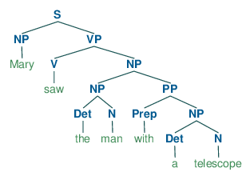
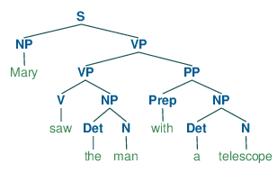

Natural Language Processing & Interpretation
TIN173/DIT410 Artificial Intelligence
John J. Camilleri
2017-04-07
Syntax and semantics: Different levels of representation
Colourless green ideas sleep furiously
- Made famous by Noam Chomsky in Syntactic Structures (1957).
- This sentence is syntactically correct.
- It would be parseable using a PSG as seen previously.

- It is unclear if it means aynthing - semantically invalid
- colourless and green are contradictory
- ideas don't sleep
- how can one sleep furiously?

Semantic interpretation
- We are interested in the meaning of a phrase, more than it's structure.
- Semantic representation is more abstract
- You understand "move the ball to the left" without needing to understand linguistics
Goal: Syntactic representation (parse tree) → Semantic representation (predicate)
Natural language example
Mary saw the man with a telescope
- Syntactic representation:
(S (NP Mary) (VP (V saw) (NP (NP (Det the) (N man)) (PP (Prep with) (NP (Det a) (N telescope))))))
 - Semantic representation:
Saw(Mary, With(Man, Telescope))
Saw,Mary,Manetc. are not tokens but logical terms.
Remember this is still ambiguous! Other interpretation:
- Syntactic:
(S (NP Mary) (VP (VP (V saw) (NP (Det the) (N man))) (PP (Prep with) (NP (Det a) (N telescope)))))
 - Semantic:
With(Saw(Mary, Man), Telescope)
Compositional semantics
- We want semantics to be compositional: the meaning of a phrase is derived from the meaning of its sub-parts.
- Semantic interpretations:
-
Mary =
Mary -
the man =
Man
-
Mary =
- What about saw the man?
- It's a predicate which takes an argument.
- Think of it as a lambda abstraction:
λx · Saw(x, Man)
Example grammar
S(pred(obj)) → NP(obj) VP(pred)
VP(pred(obj)) → V(pred) NP(obj)
NP(obj) → Name(obj)
NP(obj) → Det(The) N(obj)
Name(Mary) → Mary
N(Man) → man
Det(The) → the
V(λy λx · Saw(x, y)) → saw
Mary saw the man

So a semantic parse would give us: Saw(Mary, Man)
Quantifiers
Actually I cheated! "Mary sees the man" really means something like "There is a man and Mary sees him".
We have quantification
- So "the man" is really something like
∃x · Man(x)or∃x ∈ Men - then "Mary sees the man" is maybe
∃x · Man(x) ∧ Saw(Mary, x)
Of course modelling "real" English will require many more modifications.
- Time and tense: Mary saw the man vs. Mary sees the man
- Long-distance dependencies: Mary saw the man she had a relationship with
- Ambiguity: Police help dog bite victim
NLP in Shrdlite
Grammar
Deeper description of how the Shrdlite grammar works: http://chalmersgu-ai-course.github.io/shrdlite.html#parsing
- Grammar file:
Grammar.nein EBNF format - Compiled with the Nearley library to
Grammar.ts - Install Nearley:
npm install nearley --global - Recompile grammar:
make Grammar.ts
About the grammar
- Note separation of SG/PL categories, e.g. objects and quantifiers
- Grammar is recursive in Entity category
- EBNF syntactic sugar gives some functionality which are compiled down into CFG,
e.g. optional terms (
...:?) - The parts in
{% ... %}define the corresponding TypeScript term which should be built when parsing with that rule. - The categories in the grammar, e.g.
commandandentitycorrespond to --- but are not identical to --- the types defined inTypes.ts, e.g.CommandandEntity.
Parse function
/*
* @param input: A string with the input from the user.
* @returns: A list of parse results, each containing an object of type 'Command'.
* If there's a parsing error, it returns a string with a description of the error.
*/
function parse(input:string) : string | ShrdliteResult[] {
...
}
class ShrdliteResult {
constructor(
public input : string,
public parse : Command,
public interpretation? : DNFFormula,
public plan? : string[],
) {}
}This doesn't need to changed in order to complete the Shrdlite project (but can be modified when implementing extensions).
Parse examples
“put the white ball in a box on the floor”
Parse 1
"put the white ball that is in a box on the floor"
MoveCommand(
Entity("the",
RelativeObject(
SimpleObject(null, "white", "ball"),
Location("inside",
Entity("any",
SimpleObject(null, null, form:"box"))))),
Location("ontop",
Entity("the",
SimpleObject(null, null, "floor"))))
(MoveCommand (Entity "the" (RelativeObject (SimpleObject "white" "ball") (Location "inside" (Entity "any" (SimpleObject "box"))))) (Location "ontop" (Entity "the" (SimpleObject "floor"))))

Parse 2
"put the white ball in a box that is on the floor"
MoveCommand(
Entity("the",
SimpleObject(null, "white", "ball")),
Location("inside",
Entity("any",
RelativeObject(
SimpleObject(null, null, "box"),
Location("ontop",
Entity("the",
SimpleObject(null, null, "floor")))))))
(MoveCommand (Entity "the" (SimpleObject "white" "ball")) (Location "inside" (Entity "any" (RelativeObject (SimpleObject "box") (Location "ontop" (Entity "the" (SimpleObject "floor")))))))

Interpretation
The function you need to imeplement is interpretCommand:
/*
* @param cmd: An object of type 'Command'.
* @param state: The current state of the world.
* @returns: A DNFFormula representing the interpretation of the user's command.
* If there's an interpretation error, it returns a string with a description of the error.
*/
function interpretCommand(cmd: Command, state: WorldState): string | DNFFormula;
type DNFFormula = Conjunction[];
type Conjunction = Literal[];
interface Literal {
relation : string
args : string[]
polarity : boolean
}(Actual implementation may look slightly different, but conceptually equivalent).
Examples
| Literal | JS object |
|---|---|
| ontop(a,b) | {relation:"ontop", args:["a","b"], polarity:true} |
| holding(q) | {relation:"holding", args:["q"], polarity:true} |
| ¬leftof(c,d) | {relation:"leftof", args:["c","d"], polarity:false} |
| p | {relation:"p", args:[], polarity:true} |
About interpreter test cases
In InterpreterTestCases.ts, note that the interpretations field of each test case
is a list of lists.
- The inner list corresponds to the disjunction of terms in the DNF formula
- The outer list corresponds to the number of parses. e.g., line 221:
testCases.push({
world: "small",
utterance: "put a white ball in a box on the floor",
interpretations: [["inside(LargeWhiteBall,LargeYellowBox)"]]
});
testCases.push({
world: "small",
utterance: "put a black ball in a box on the floor",
interpretations: [["inside(SmallBlackBall,LargeYellowBox)"], ["ontop(SmallBlackBall,floor)"]]
});- Both utterances are ambiguous in the syntactic senses, but in the first case one alternative is ruled out because it is impossible (there is no white ball in a box).
- In the second case, both alternatives remain and thus
Ambiguity resolution
Note that the interpret function will return a list of interpretations (inside ShrdliteResult objects)
and thus you may still have ambiguity after the interpretation phase.
Planning
Once you have a single goal, use graph search to find a sequence of robot movements that will take you to a state where that goal is satisfied.